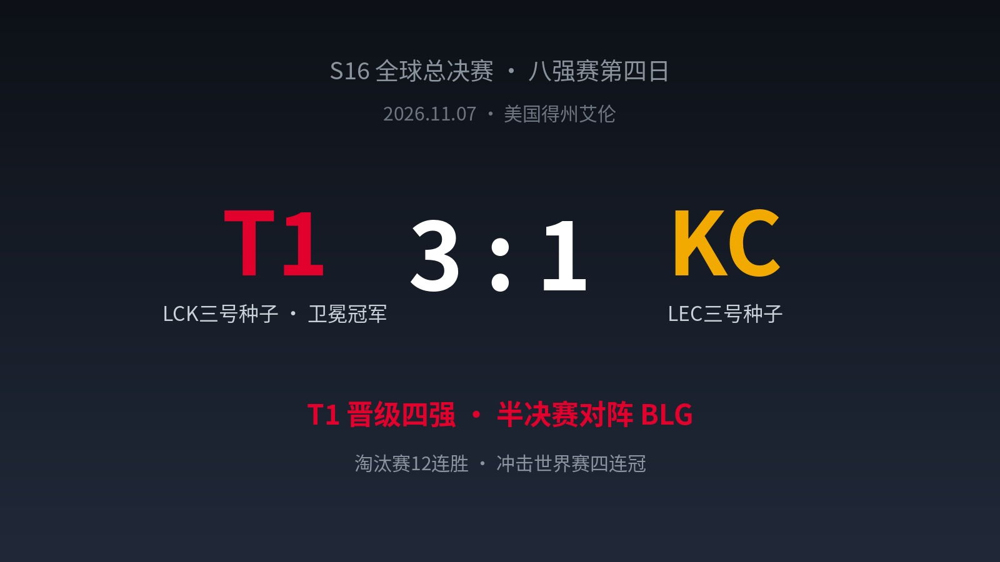
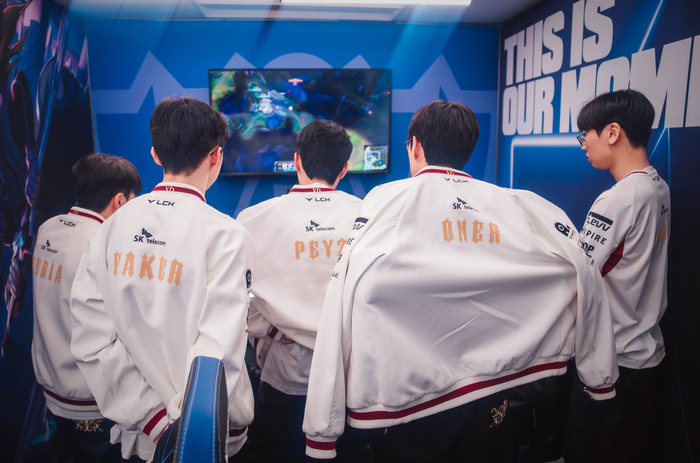
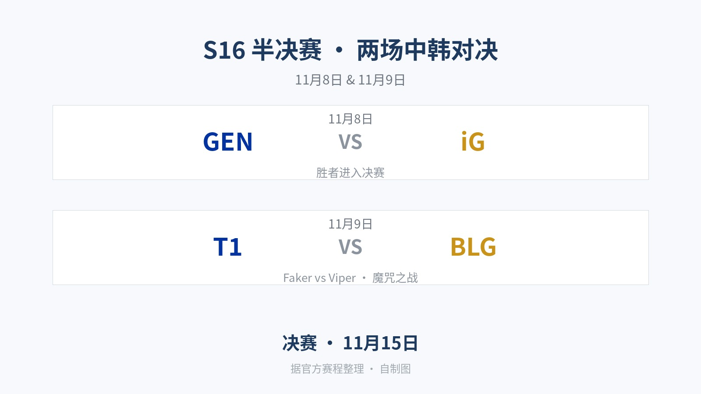

▲ 比赛结果（自制图）
3-1，T1晋级四强。比分谈不上碾压，KC甚至扳回过一局。
但真正让人后背发凉的，是赛后采访。Faker先夸了一句："BLG是有争冠实力的。"然后补了下半句："不过很可惜，他们半决赛碰到了我们。"
先礼后兵，火药味拉满。半决赛，T1对BLG，9日开打。
01 四局比赛：KC咬得比想象中紧
首局T1前半程被KC压着打，中盘才靠Peyz的爆发接管团战，25分钟、27分钟连吃两波团，35分钟艰难拿下。第二局倒是干脆：开局3分钟就打出3杀，29分钟中路一波团灭对手，2-0。
第三局KC不肯退场，上单Canna的克桑提在大龙前挡住T1的进场，随后大龙、龙魂、远古龙全部收下，38分钟硬生生扳回一城。
第四局双方咬到32分钟，T1集齐龙魂后，Keria的尼科在决胜团里把大招"绽放"砸进了人堆——一个技能，决定四强归属。35分钟，比赛结束。

▲ T1队员赛后背身复盘（图源：Riot Games）
02 "状态不好"的卫冕冠军，最可怕
赛后韩媒专访，Faker说："说实话，今天我的状态并不是特别好，多亏队友发挥才赢下比赛。"
结合另一个细节看这句话更冷：据现场记者描述，T1全员晋级后面无表情，赢了像输了一样。
淘汰赛12连胜，冲击世界赛史上首个四连冠、队史第7冠——对这支队伍来说，八强只是流程，还剩两场胜利。而状态"不好"的Faker，和全情投入的Oner、Keria、Peyz、Doran，才是他们的完全体。
03 Faker的"先夸后杀"
聊到半决赛对手，Faker的完整表述是这样的：
"BLG在本届比赛展现出了极强的实力，接连击败LCK的队伍，是有争冠实力的。不过很可惜，他们半决赛碰到了我们。"
先承认你强，再告诉你强也没用。这是老牌王朝的说话方式：不否认对手，只是平静地宣判。
BLG这边也给出了回应。Viper赛前表态："一定要打破在世界赛不胜T1的魔咒。"魔咒是真实的——BLG世界赛历史交手T1，一场没赢过。这次，是新阵容、新复仇故事的机会。
04 越过欧洲之墙，撞上万里长城
韩国媒体赛后用了这么一句话："越过欧洲之墙的T1，现在向万里长城进发。"
四强就此定型，两场半决赛全部是中韩对决：

▲ 半决赛赛程（自制图，据官方赛程整理）
8日GEN对iG，9日T1对BLG。若GEN与T1双双过关，决赛将上演LCK内战；若LPL双杀，则把S16变成LPL的收官派对。
评论区聊聊：两场半决赛，LPL能双杀LCK吗？T1的王朝和LPL的新王，你押哪边？
—— 周六、周日，不见不散 ——
信息来源：LPL/LoL Esports官方赛程、韩媒国民日报Faker专访（直播吧译）、sportsseoul达拉斯现场报道、懂球帝、虎扑、搜狐等公开报道。比赛照片图源Riot Games/韩国媒体现场图，比分卡与对阵卡为自制图。